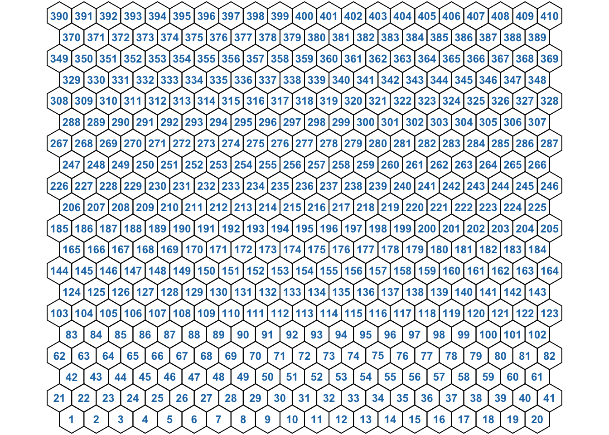

Chapter 4 SOM Initialization
SOMDisco is built around the internal C++ class SOMOBJ, which is a header-only class (found in the /inst/include/ source package) envisioned to be entirely portable for future integration with other SOM-related projects. This section will demonstrate how to interact with the class fields and methods to achieve SOM training (a complete list of the fields and methods of this class exposed to the user by the SOMDisco package can be found with ?SOM). All methods are documented in the usual manner, with help functionality available via ?<method_name>.
To get started with SOM training we must instantiate an empty SOM object, then initialize it with our training data and desired lattice size and topology via the method initialize_SOM.
library(SOMDisco)
mysom = SOM$new()
mysom$initialize_SOM(SHGR$X, 20, 20, "hex")
## Setting lattice quantities
## ++ calculating lattice (x,y) coordinates ... done
## ++ calculating neuron lattice adjacencies ... done
## ++ calculating geodesic lattice distances between neurons ... done
## ++ assigning geodesic lattice distances to distlist ... done
## ++ calculating lattice tile vertices ... done
## ----------------------------------------------------------------
## Setting training data
## ----------------------------------------------------------------
## Setting network ranges
## ++ external = [-115.19, 1347.57]
## ++ internal = [0.00, 1.00]
## ++ change defaults via $set_netrng
## ----------------------------------------------------------------
## Initializing prototypes to random uniform
## ++ to set a particular random seed call set.seed() and then $set_W_runif()
## ++ to set to specific values call $set_W()
## ----------------------------------------------------------------
## Initializing prototype win frequencies to equiprobable
## ++ to set to specific values call $set_p(values)
## ----------------------------------------------------------------
## Setting default learning rates
## Storing the annealing schedule as:
## t alpha beta gamma sigma
## 16384 0.50 0.05 0.01 3
## 81920 0.25 0.03 0.00 2
## 163840 0.10 0.01 0.00 1
## 409600 0.05 0.01 0.00 1
## 1638400 0.01 0.00 0.00 1
## ++ change via $get_LRAS and $set_LRAS
## ----------------------------------------------------------------The arguments to initialize_SOM are, in order: the matrix with training data in rows, the desired som lattice width and height (number of neurons along each dimension) and the desired lattice type, which can be either "hex" for hexagonal lattices or "grid" for rectangular lattices. Internally, initialize_SOM calls several other methods to set required (and internally calculated) quantities related to the SOM lattice, and default parameters for network scaling, prototype initialization, and learning rate annealing. The sample size nX and data dimension d are also stored during this call.
4.1 Lattice Quantitites
Lattice quantities are fields that generally begin with nu_* (by our convention, lattice neurons are represented by lower Greek \(\nu\)). These fields can be examined via the $ operator of of the instantiated SOM object:
# The lattice width, height, and type, respectively
mysom$som_x
## [1] 20
mysom$som_y
## [1] 20
mysom$lattice_type
## [1] "hex"
# The total number of neurons / prototypes in the SOM.
# For hexagonal lattices, this number will be > som_x*som_y
mysom$nW
## [1] 410
# The (x,y) coordinates of the neurons on the SOM lattice
str(mysom$nu_xy)
## num [1:410, 1:2] 1 2 3 4 5 6 7 8 9 10 ...
# The (row,col) coordinates of the neurons on the SOM lattice.
# These differ from their (x,y) coordinates if lattice_type = 'hex'
str(mysom$nu_ij)
## num [1:410, 1:2] 1 1 1 1 1 1 1 1 1 1 ...
# A binary adjacency matrix representing the topology of neurons on the lattice
str(mysom$nu_ADJ)
## num [1:410, 1:410] 1 1 0 0 0 0 0 0 0 0 ...
# The (x,y) coordinates of the vertices of each lattice tile are stored
# in a 3d cube whose slices follow neuron ordering.
str(mysom$nu_verts)
## num [1:6, 1:2, 1:410] 1.5 1 0.5 0.5 1 ...
# e.g., the vertices of the lattice tile centered at the first neuron are:
mysom$nu_verts[,,1]
## [,1] [,2]
## [1,] 1.5 1.2886751
## [2,] 1.0 1.5773503
## [3,] 0.5 1.2886751
## [4,] 0.5 0.7113249
## [5,] 1.0 0.4226497
## [6,] 1.5 0.7113249
# A list giving, for all neurons, the indices of others neurons that are
# within a certain lattice geodesic distance:
length(mysom$nu_nhblist)
## [1] 410
# The vector nu_nhblist[[i]][[j]] contains indices of neurons that are
# within geodesic lattice distace j-1 of neuron i.
# ex., these neurons are within lattice distance = 1 of the first lattice neuron:
mysom$nu_nhblist[[1]][[2]]
## [1] 2 21 22The above quantities are set by the method set_lattice, but this should rarely need to be called on its own (it is called internally by initialize_SOM). All containers storing neuron and prototype quantities are ordered such that the first element (or row, or slice, as applicable) corresponds to the neuron at the bottom left of the SOM lattice. Ordering proceeds across the rows of the lattice so that the last element (row, slice) corresponds to the neuron at the top right of the SOM.

This is known as neuron ordering
4.2 Network Scaling
The external network range is the apparent range of the training data. Internally, the SOM prototypes are stored in an internal" network range, which is necessary to stabilize and accelerate the training process. Both BMU selection and prototype updates are performed in the internal network range. During training, data are mapped (linearly) from the external to internal range for presentation to the network. initialize_SOM calls the method set_netrng internally, which sets the min/max of both the external and internal network ranges needed for this mapping to their defaults (which is the apparent dimension-wise range of the training data for the former, and [0,1] for the latter):
# The default values stored
str(mysom$netrng_ext_min)
## num [1, 1:100] -115 -115 -115 -115 -115 ...
str(mysom$netrng_ext_max)
## num [1, 1:100] 1348 1348 1348 1348 1348 ...
mysom$netrng_int_min
## [1] 0
mysom$netrng_int_max
## [1] 1The default network scalings can be changed manually by calling set_netrng at any point prior to training. See its help for more information.
Once the network ranges are set, data can be mapped from external to internal network ranges (or vice-versa) via the methods map_to_netrng and map_from_netrng, both of which are parallelized. For example, the entire training set can be mapped to the internal network range via:
range(SHGR$X)
## [1] -115.1884 1347.5741
mapped_training_data = mysom$map_to_netrng(SHGR$X)
range(mapped_training_data)
## [1] 0 1Commonly, the learned SOM prototypes would need to be extracted from the SOM object and returned to external range for direct comparison with the data. This can be achived by:
4.3 Prototype Initialization
The SOM prototype weights are stored in the rows of the nW x d prototype matrix W:
initialize_SOM calls the method set_W_runif automatically, which initializes the prototypes to random uniform values over the middle 10% of the internal network range. If random seeding of these values is desired for reproducibility, this method should be re-invoked immediately after a call to R’s set.seed:
Custom prototype initializations are supported by the general method set_W, which allows the user to set a desired prototype weight matrix (which must have conforming dimensions: nrows = nW and ncols = d) Here, we set them to random standard normals for demo purposes:
rnorm_protos = matrix(rnorm(mysom$nW*mysom$d), nrow=mysom$nW, ncol=mysom$d)
mysom$set_W(rnorm_protos)
## Warning in mysom$set_W(rnorm_protos): Input is outside netrng_int. Likely need
## to scale to internal network range, then call $set_W()A warning is issued if the prototype matrix contains values outside the internal network range. Custom initializations will likely need to be mapped to internal range prior to setting:
4.4 Win Frequency Initialization
In addition to the prototypes themselves, DeSieno’s CSOM algorithm introduces another learned quantity to facilitate a maximum-entropy SOM mapping: the prototype win frequencies, which are stored in the SOM object in the vector p. The p control the CSOM prototype bias, which affects the competitive stage of BMU selection during SOM training. initialize_SOM automatically calls the method set_p_equal, which sets all prototype win frequences to the value 1 / nW. If desired, other initializations can be achieved via the method set_p, which takes a user-specified vector of win frequencies:
4.5 Learning Rate Initialization
All CSOM learning rates should be annealed over time. Annealing is controlled by the internally stored data frame LRAS (or Learning Rate Annealing Schedule), which has columns t (setting the cumulative number of training steps over which the given rates are valid), alpha (controlling the strength of the prototype updates), beta (controlling the strength of win frequncy updates), gamma (controlling the influence of the win frequences to the CSOM bias), and sigma (controlling the lattice neighborhood size over which prototype updates occur). initialize_SOM calls the stand-alone function default_LRAS by default, which populates an annealing schedule based solely on the training sample size:
default_LRAS(nX = mysom$nX)
## t alpha beta gamma sigma
## 1 16384 0.50 0.050 0.0050 3
## 2 81920 0.25 0.025 0.0025 2
## 3 163840 0.10 0.010 0.0010 1
## 4 409600 0.05 0.005 0.0005 1
## 5 1638400 0.01 0.001 0.0001 1Users can check the current annealing schedule of the SOM object via the method get_LRAS and set it to new values with set_LRAS, which takes a data frame of the above form as input. For example, the below will increase the alpha values for all training steps by 10%:
new_LRAS = mysom$get_LRAS()
new_LRAS$alpha = 1.10 * new_LRAS$alpha
mysom$set_LRAS(new_LRAS)
## Storing the annealing schedule as:
## t alpha beta gamma sigma
## 16384 0.55 0.05 0.01 3
## 81920 0.28 0.03 0.00 2
## 163840 0.11 0.01 0.00 1
## 409600 0.06 0.01 0.00 1
## 1638400 0.01 0.00 0.00 1At every training step the currently applicable learning rates (based on the SOM’s age and the LRAS schedule) are extracted from the LRAS data frame and stored in the following fields by the method update_learning_rates:
The parameter sigma controls the size of the (lattice) neighborhood (of the prevailing BMU) in which prototypes are updated during each training step. The strength of neighbor updates decreases with their lattice distance from the BMU; the prototypes of any neurons which are greater than sigma away from the BMU will not be updated. The strength of updates to prototype whose neurons are within a sigma lattice radius of the BMU decreases exponentially with this lattice distance. This factor is stored in the SOM object as the parameter eta, which is a vector of length sigma + 1. The vector element eta[r] stores a multiplicative coefficient applied to the updates of those prototypes which are distance r-1 from the BMU.
eta is re-calculated any time the effective sigma value is changed (annealed) during training. To enforce the organization of the SOM, eta always = 1 for the BMU and its immediate lattice neighbors. eta is calculated via the method calc_eta, which should rarely need to be called on its own.
Of note, Kohonen’s original prototype algorithm (i.e, without DeSieno’s Conscience modification) can be achieved by setting beta and gamma to 0 and annealing a larger sigma radius over time.